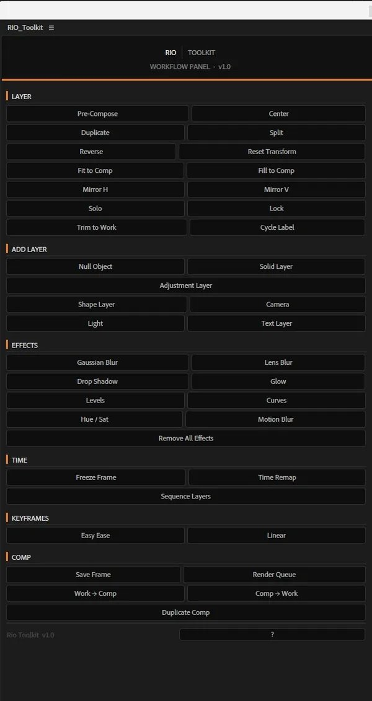
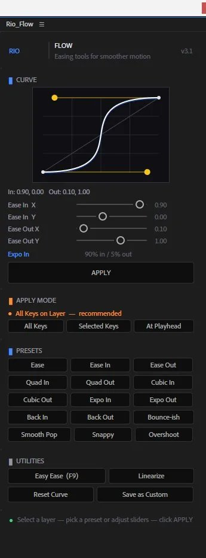

Two After Effects panels that turn the repetitive 80% of editing into a single button — so the time goes to the idea, not the busywork.
The first build crammed everything into one do-everything panel with too many options. Powerful, but nobody could learn it at a glance.
I split it into two focused panels — one for workflow actions, one for motion — each laid out so the button you want is where you'd expect it, with hover and click feedback so it feels responsive.
Both ship as a single self-contained .jsx that docks as a ScriptUI panel or runs as a floating palette — same file, either way.

The common moves — align, pre-comp, create, fit, freeze, effects, render — grouped by task and reduced to one click each.

Easing presets you apply to keyframes in a click — ease, quad, expo, back, bounce, overshoot — plus a live curve preview and a custom curve builder.
Every action runs inside a single undo group, so Cmd/Ctrl + Z always backs it out cleanly.
A 3×3 grid — top/middle/bottom × left/center/right. Reads anchor point and scale to land the layer correctly, in both 2D and 3D. Center In Comp is tinted to stand out.
Solid, shape, text, null, camera, point light, adjustment layer — added straight to the active comp through native AE scripting, no extra dialogs.
Pre-Comp, Center, Fit To Comp, Mirror, Freeze Frame (hold keyframes via time-remap), and Enable Motion Blur on both the layer and the comp switch.
Lumetri, Curves, Hue/Sat, Levels, Brightness, Tint, Fill, Glow, Drop Shadow, Gaussian & Lens Blur, Keylight — each applied by its exact internal matchName.
Save Current Frame drops a render-queue item at the playhead — ready to render with one more click from the queue.
One C{} colour block and named BTN_*_H height constants up top. Change the look without touching a line of logic.
A live ScriptUI canvas redraws a bezier approximation of the selected preset on every click — a graph-editor feel within ScriptUI's limits.
Tuned speed + influence pairs: standard eases, polynomial curves (quad / cubic / expo), anticipation (back in/out, overshoot), and character presets — Bounce-ish, Smooth Pop, Snappy.
The curve canvas draws handle arms, a linear reference diagonal, and grid lines, then repaints the moment you switch presets.
Dial in name, in/out influence and speed, then Save Preset to add it as a new button for the session.
Easy Ease, Linearize, Copy Current Settings, and Reset Fields — the small moves you reach for between every keyframe pass.
Both panels install the same way. Save the file, copy it into the ScriptUI Panels folder, restart After Effects.
# Applications → After Effects [ver] Scripts/ScriptUI Panels/ Rio_Tools.jsx Rio_Flow.jsx
# Program Files → Adobe → After Effects [ver] Support Files/Scripts/ScriptUI Panels/ Rio_Tools.jsx Rio_Flow.jsx
Rio_Tools.jsx and Rio_Flow.jsx from the repo.ScriptUI Panels folder shown above.Window > Rio_Tools.jsx or Window > Rio_Flow.jsx, then dock anywhere.First run blocked? In After Effects → Preferences → Scripting & Expressions, enable “Allow Scripts to Write Files and Access Network.”
Building my own panels showed me most of my creative block was just friction. Remove the clicks and the work starts moving on its own.